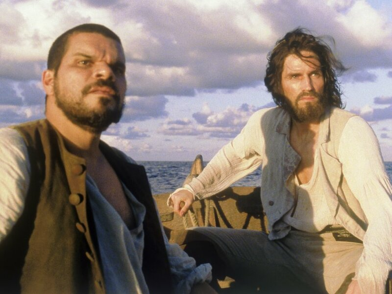
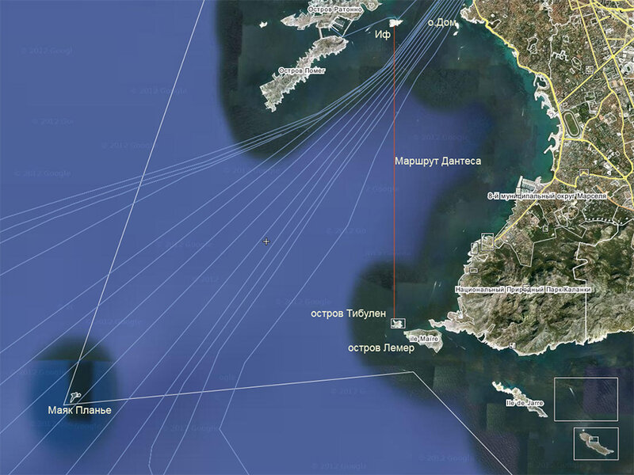

Беллетристика есть мерка богатства всякой литературы. И ни одна литература в мире не может равняться в этом отношении с французскою. Искусство писать до того развилось во Франции, что как будто сделалось второго природою французов. Оттого во Франции есть что читать, да и вся Европа читает французских писателей, все европейские литературы живут переводами с французского. В самом деле, что такое все эти романы - "Матильда", "Парижские тайны", "Вечный жид", "Королева Марго", "Монте-Кристо", "Ночи на кладбище отца Лашеза", если не блестящие произведения беллетристики, наполненные всевозможными натяжками, неестественностями, эффектами и в то же время, местами, блистающие вдохновением, умом, мыслию, всегда живые и занимательные? Они недолговечны, потому что их авторы - обыкновенно таланты, не гении, и пишут не для потомства, не для веков, а только для того года, в который пишут. Все эти романы и повести, пошумев на белом свете, скоро забудутся, но смененные другими, - и таким образом публике всегда есть что читать. Если вы не любите эфемерных произведений беллетристики, любя только художественные создания, - не читайте их, но и не браните, не презирайте беллетристики: она и без вас найдет себе множество читателей и будет им полезна, благотворно действуя на их образование и доставляя им умное и благородное развлечение. Пусть аристократы искусства читают только своих привилегированных авторов: масса публики тоже должна иметь свою литературу. И если какая-нибудь литература удовлетворяет вдруг тому и другому требованию, - тем больше ей чести и славы!..
В. Г. Белинский Карманная библиотека. Граф Монте-Кристо, роман Александра Дюма (1845)

Кадр из фильма «Граф Монте-Кристо» (Touchstone Pictures, 2002). В роли Эдмона Дантеса – Джеймс Кевайзел (James Caviezel).
«А еще готовился к печати очень слабый старый перевод «Графа Монте-Кристо», Вера Максимовна взяла меня на эту работу чуть ли не полноправным соредактором. Насколько возможно было, еще и в спешке, мы убрали грубые смысловые ошибки и самые страшные словесные ляпы, и в таком виде перевод перепечатывается почти полвека. Но В.М. учила еще одному: переписать плохой перевод невозможно. А заново эти 80 с хвостиком печатных листов едва ли кто-нибудь когда-нибудь переведет»
Нора Галь: Воспоминания. Статьи. Стихи. Письма. Библиография
«В издании 1946 г. указано: «Перевод под редакцией Н.Галь и В.Топер» – такая формула использовалась в 40-70-е гг. для старых переводов, подвергшихся полной переработке. Однако, как пишет Нора Галь, «для переиздания в 50-х гг. нам не дали пересмотреть и еще раз поправить текст, как всегда со всякой своей работой делала ВМ и делаю я, и потому мы свои фамилии с титульного листа сняли» (Е.Комаровой, 20.04.1987). В некоторых последующих изданиях были восстановлены имена авторов старого перевода Л.Олавской и В.Строева.
К изданию 1991 г. (Дюма А. Собр.соч. в 15 тт., тт.9-10. – М.: Правда, 1991. – Библиотека «Огонек») НГ заново пересмотрела роман, подвергнув его значительной правке; однако итог работы все-таки не удовлетворил НГ полностью, а потому она настояла на том, чтобы в выходных данных этого издания был указан особый псевдоним – «Г.Нетова».»
«Из островов, окружающих замок Иф, Ратонно и Помег – ближайшие; но Ратонно и Помег населены, населен и маленький остров Дом, а потому самыми надежными были острова Тибулен и Лемер; оба они расположены в миле от замка Иф.»

Дантес тем не менее решил доплыть до одного из этих островов. Но как найти их во мраке ночи, который с каждым мгновением становится все непрогляднее?
В эту минуту он увидел сиявший, подобно звезде, маяк Планье.
Держа прямо на маяк, он оставлял остров Тибулен немного влево. Следовательно, взяв немного левее, он должен был встретить этот остров на своем пути.
… он плыл и плыл…
Так прошел целый час, в продолжение которого Дантес, воодушевленный живительным чувством свободы, продолжал рассекать волны в принятом им направлении…
«Скоро час, как я плыву, – говорил он себе, – но ветер противный, и я, должно быть, потерял четверть моей скорости. Все же, если я не сбился с пути, то, вероятно, я уже недалеко от Тибулена. Но что, если я сбился!»
… Вдруг ему показалось, что небо, и без того уже черное, еще более темнеет, что густая, тяжелая, плотная туча нависает над ним; …. Дантес протянул руку и нащупал что-то твердое. Он подогнул ноги и коснулся земли. Тогда он понял, что он принял за тучу.
В двадцати шагах от него возвышалась груда причудливых утесов, похожая на огромный костер, окаменевший внезапно, в минуту самого яркого горения. То был остров Тибулен.